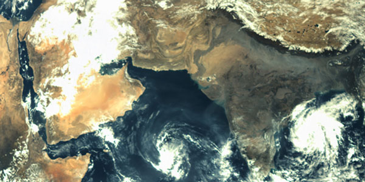

GOVRNMENT OF
INDIA
 |
 |
Department of space
|
| About ISRO | Business with ISRO | Work with ISRO |
|---|---|---|
| Vision and Mission Statements | Antrix | Careers |
| Genesis | Technology Transfer | Sponsored Research |

Cryogenic Upper Stage of GSLV. Self reliance in critical technologies |

Indian sub-continent as seen by Mars Orbiter Mission spacecraft during its geocentric phase |

Dr Sarabhai and Dr Kalam. A photograph from the early stages of the Indian space programme |

elemedicine. Applications of space technology reaching far-flung corners of the country |
India decided to go to space when Indian National Committee for Space Research (INCOSPAR) was set up by the Government of India in 1962. With the visionary Dr Vikram Sarabhai at its helm, INCOSPAR set up the Thumba Equatorial Rocket Launching Station (TERLS) in Thiruvananthapuram for upper atmospheric research.
Indian Space Research Organisation, formed in 1969, superseded the erstwhile INCOSPAR. Vikram Sarabhai, having identified the role and importance of space technology in a Nation's development, provided ISRO the necessary direction to function as an agent of development. ISRO then embarked on its mission to provide the Nation space based services and to develop the technologies to achieve the same independently.
Throughout the years, ISRO has upheld its mission of bringing space to the service of the common man, to the service of the Nation. In the process, it has become one of the six largest space agencies in the world. ISRO maintains one of the largest fleet of communication satellites (INSAT) and remote sensing (IRS) satellites, that cater to the ever growing demand for fast and reliable communication and earth observation respectively. ISRO develops and delivers application specific satellite products and tools to the Nation: broadcasts, communications, weather forecasts, disaster management tools, Geographic Information Systems, cartography, navigation, telemedicine, dedicated distance education satellites being some of them.
To achieve complete self reliance in terms of these applications, it was essential to develop cost efficient and reliable launch systems, which took shape in the form of the Polar Satellite Launch Vehicle (PSLV). The famed PSLV went on to become a favoured carrier for satellites of various countries due to its reliability and cost efficiency, promoting unprecedented international collaboration. The Geosynchronous Satellite Launch Vehicle (GSLV) was developed keeping in mind the heavier and more demanding Geosynchronous communication satellites.
Apart from technological capability, ISRO has also contributed to science and science education in the country. Various dedicated research centres and autonomous institutions for remote sensing, astronomy and astrophysics, atmospheric sciences and space sciences in general function under the aegis of Department of Space. ISRO's own Lunar and interplanetary missions along with other scientific projects encourage and promote science education, apart from providing valuable data to the scientific community which in turn enriches science.
Future readiness is the key to maintaining an edge in technology and ISRO endeavours to optimise and enhance its technologies as the needs and ambitions of the country evolve. Thus, ISRO is moving forward with the development of heavy lift launchers, human spaceflight projects, reusable launch vehicles, semi-cryogenic engines, single and two stage to orbit (SSTO and TSTO) vehicles, development and use of composite materials for space applications etc.